Deep Sky Notes — September 2026
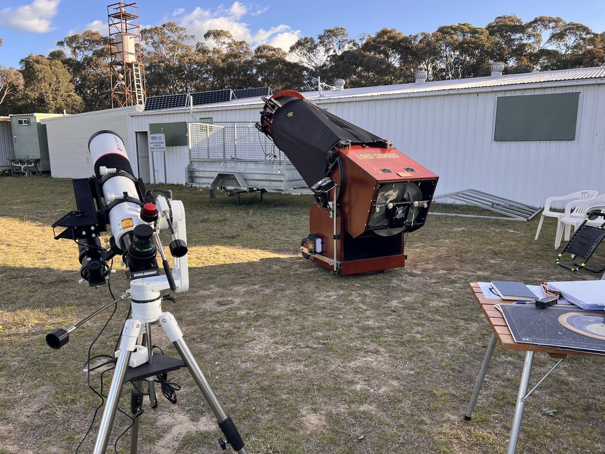
The forecast going into the September Wiruna weekend was promising so I was looking forward to the weekend. I arrived Friday afternoon and set up the Club’s 22-inch Lord Sidious and a new scope I had brought up for the first time. I had recently liberated a second-hand 80mm f/7 Sky Rover APO ED doublet from an imager who was upgrading his setup (see Figure 1). I had tested the new scope briefly from home, but this would be its first light under dark skies. So, whether the sky gods would comply remained to be seen.
The skies were mostly clear all afternoon, a slight breeze was the only negative on a cool spring evening. My focus for the weekend was the constellation of Scorpius. At 7pm Scorpius sat near the Zenith, so once the 22-inch was up and running, I pottered around in the constellation of Centaurus to kill some time. One object of note was the open cluster NGC 5617, which sits ~1.2° away from -0.27 magnitude Rigil Kent (α-Cent). NGC 5617 appears as a large cluster, filling the field of view (FOV) of the 31mm Nagler (90× magnification, 0.9° TFOV). It shows a concentration of stars towards the core with several loose chains of stars arching out from the core giving the cluster an irregular shape. No colour amongst the stars was apparent. I could also pick out the neighbouring cluster of Tr 22 in the same FOV (~30′ away). The pair are suspected to be a physical binary cluster with matching distances and radial velocities1. Tr 22 appears as a relatively fainter collection of 20-30 stars. Hopping over to my 80mm refractor with a 16mm Nagler (35× magnification, 2.3° TFOV) eyepiece in, I was able to pick up a trio of open clusters in the area (NGC 5617, Tr 22 and I suspect NGC 5606). In the 80mm, NGC 5617 is not much more than a fuzzy patch with a few of the brighter members resolved with averted vision (AV). It is easy to find the trio of clusters by starting from Rigil Kent. A number of bright open clusters dot this region.
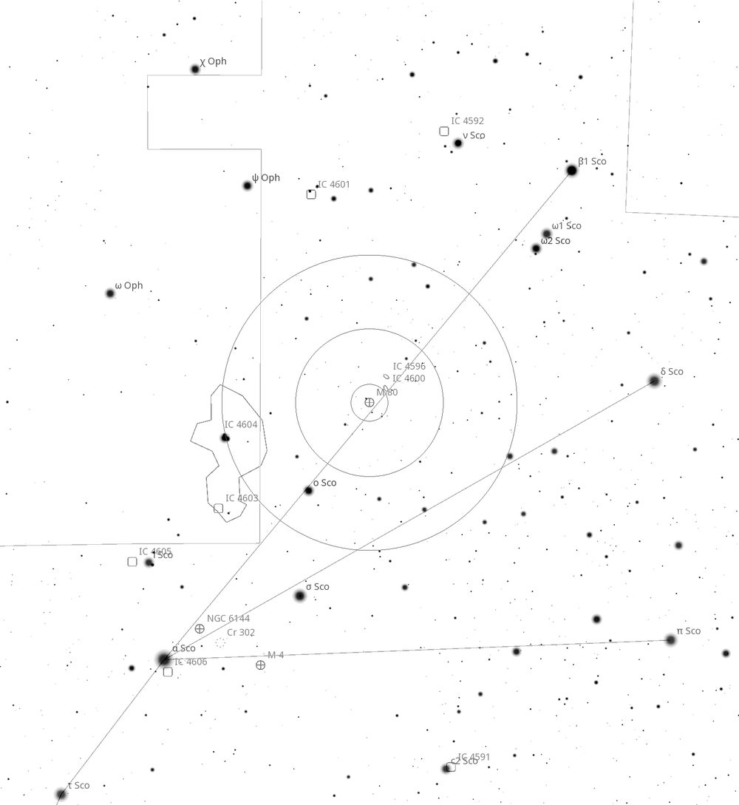
As Scorpius began its descent towards the western horizon, I aimed Lord Sidious towards the head of the scorpion at the globular cluster M80. The small, compact core has a relatively high surface brightness at 7.3 magnitude. In Lord Sidious with a 27mm Panoptic (103× magnification, 0.66° TFOV), the halo resolves into a uniform cloud of stars. Upping the magnification with a 17mm Nagler (164× magnification, 0.5° TFOV), I was able to also rein in the brighter stars in the core. As a comparison, I hopped back to the 80mm refractor to see what M80 would look like. To find M80, start from Antares (α-Scorpii) and follow the chains of stars to β-Scorpii. M80 sits roughly halfway between α-Scorpii and β-Scorpii (see Figure 2). In the 80mm refractor with 16mm Nagler, M80 has a distinctly brighter core with surrounding unresolved circular halo, like an elliptical galaxy.
Back on Lord Sidious, I pushed the scope towards Antares (see Figure 2) to find another globular cluster M4. M4 is quite the contrast from its smaller neighbour. It is ~26′ across, but that size comes with a slighter fainter appearance. M4’s appearance is unique; it lacks a dense core and is much more uniform in brightness across the central bar of stars. The halo is a tangled mess of chains and loops of brighter stars that dangle off the core the globular. Hunting down M4 in the refractor is made easy by, 0.9-magnitude Antares sitting ~1.3° away. Putting Antares in the eyepiece of the refractor with 16mm Nagler, places M4 and nearby globular NGC 6144 in the same FOV. At 9.6 magnitude, NGC 6144 is just a faint glow with no detail. The refractor can resolve the brighter members of M4 and brought out its irregular shape nicely.
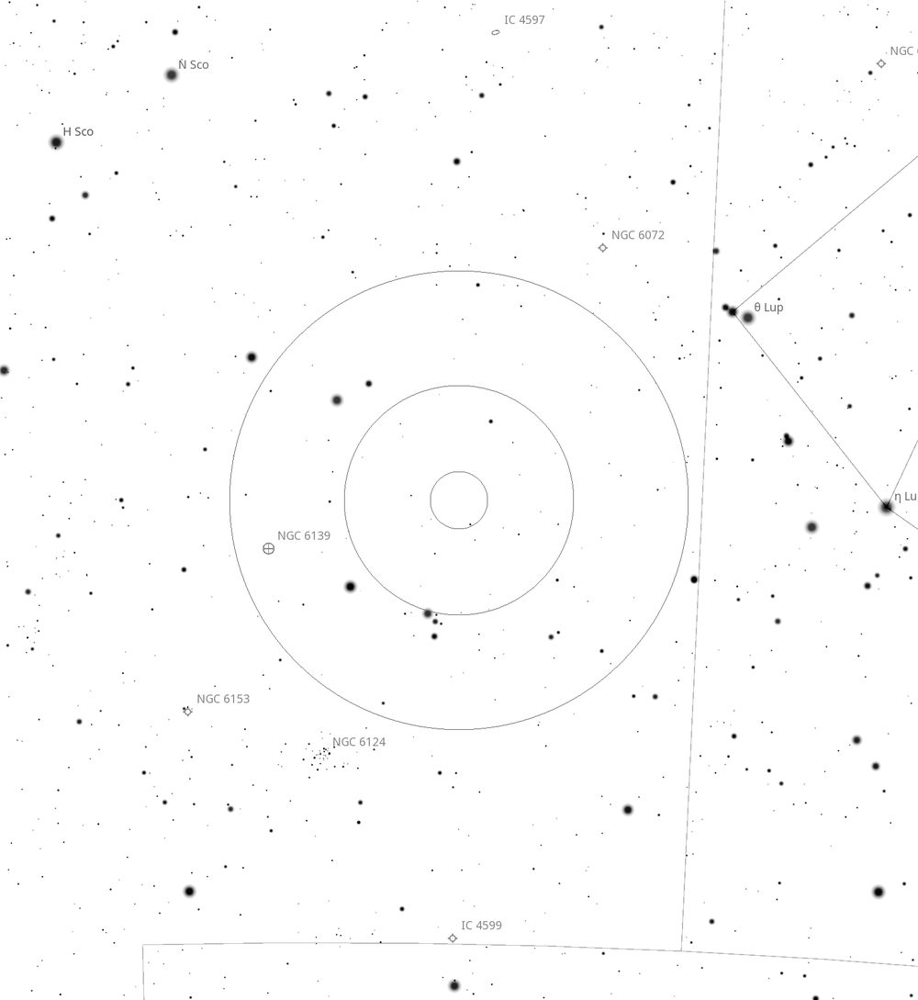
Continuing down the “body” of Scorpius I came to the globular cluster NGC 6139 (see Figure 3). Even in Lord Sidious with a 27mm Panoptic eyepiece, this ~8′ wide cluster is not much more than an unresolved disk of stars, with the halo showing some texture but resisting resolution. This globular sits close to the galactic plane and is heavily reddened by intervening interstellar dust. It sits about ~6° down from ε-Scorpii. Close by sits NGC 6072 a planetary nebula (see Figure 3). A 17mm Nagler spies out a large grey disk ~1′ across which immediately stood out in the FOV. Its circular disk shows a uniform brightness with no hint of a central star. Upping the power to a 9mm Nagler (310× magnification, 0.26° TFOV) and adding an OIII filter helped to improve the contrast, and I got the sense the disk was slightly elongated, tapering off towards the edges. Hubble images show its bipolar shape nicely.
Nearby sits the open cluster NGC 6124. I started with a 27mm Panoptic in Lord Sidious, but the cluster filled up most of the FOV. It’s a bright 5.8 magnitude cluster which stretches 29′ across. The 31mm Nagler gave a better view. The cluster is comprised of a central concentration of stars with a sprawling loose collection of members surrounding the central concentration. A few members had a yellow hue to them. A large open cluster like this really benefits from a wider FOV, so I swung the refractor over. It forms a loose triangle with NGC 6231 and μ1 μ2 Scorpii, making it easy to aim the Telrad and is easy to pick up in the 9x50 finderscope (see Figure 3). In the refractor with a 16mm Nagler, the cluster’s true scale can be appreciated with all the brighter members visible with AV filling out the rest.
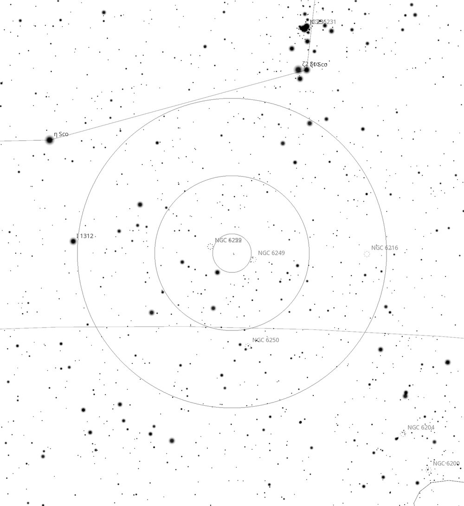
I then swung down to a pair of open clusters NGC 6259 and NGC 6249 which sit about ~2.5° away from η-Scorpii (See Figure 4) at the base of Scorpius’s tail. NGC 6259 is a dense collection of 100+ stars in a fine haze spread over a large area giving it a relatively low surface brightness (compared to nearby NGC 6231). This cloud of stars is itself set in a rich starfield. Only ~0.5° away sits NGC 6249, which is much smaller but brighter collection of 10-20 stars arranged in a few loose chains. I was able to hunt down this pair using the refractor. I started with NGC 6231 (the naked eye cluster that marks the curve of Scorpius’s tail) and placed the edge of Telrad circle just below it. NGC 6259 is harder to pick in the 9x50 viewfinder, but in the eyepiece of the refractor I could pick it out as an unresolved cloudy haze of fine stars with only a few brighter members flickering in and out of view. In contrast, the brighter members of NGC 6249 beneath it were easy to pick out. All round a nice visual pair, but it really requires some aperture to resolve NGC 6259 from a hazy cloud into a mass of fine stars.
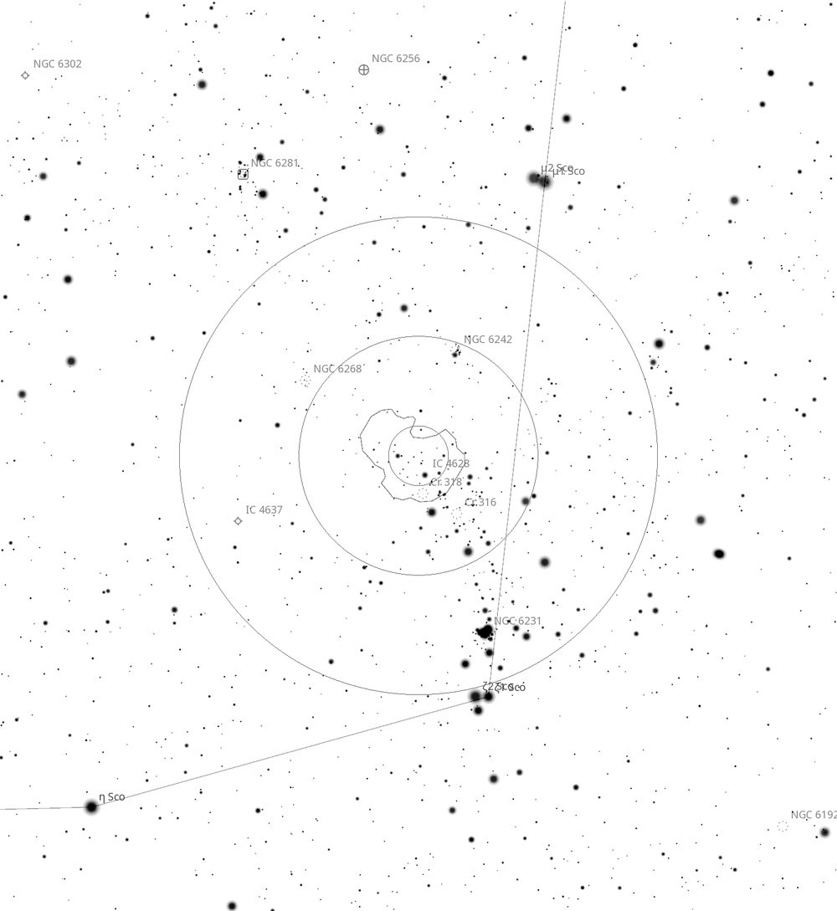
Next, I aimed for IC 4628, a large emission nebula complex and active star-forming regions that sits just above NGC 6231 (see Figure 5). NGC 6231 hosts multiple O-type and Wolf-Rayet stars — the same population that ionises IC 4628. With a 31mm Nagler in Lord Sidious I could glean a very slight nebulous haze which was much improved with the addition of a UHC filter. It did have a curved shaped, fitting with its namesake, “The Prawn Nebula”, but I had to pan the telescope around to capture the full extent of it. There is not much detail in the nebula itself, it appeared mostly as a curved band of light, slightly brighter than the surrounding background. The FOV is strewn with many bright stars. I then hopped over to the refractor and added a 35mm Panoptic (16× magnification, 4.3° TFOV) eyepiece. This is great region to explore with a wide-field eyepiece. Starting from NGC 6231, a chain bright stars leads towards IC 4628, I could also spy out two other pockets of stars which were likely NGC 6268 and NGC 6242 (see Figure 5). Hopping back up to Lord Sidious I centred on 9.5 magnitude NGC 6268 for a closer look. With the 31mm Nagler in, this cluster is a collection of 20-30 stars arranged in a few loose chains (very different from the fine cloud of stars of NGC 6259). I then pushed Lord Sidious over to nearby NGC 6242 for a look. At 9′ across and 6.4 magnitude, its much brighter than its neighbour and richer. Its brightest member is an orange-yellow hued (K-type giant) star which stands out in sharp contrast to the remaining 20-30 members are of varying magnitudes. The brighter members form a ‘Y’ shaped chain in the centre of the cluster. In the refractor I can also pick up the bright orange-yellow star plus a couple of the brighter members.
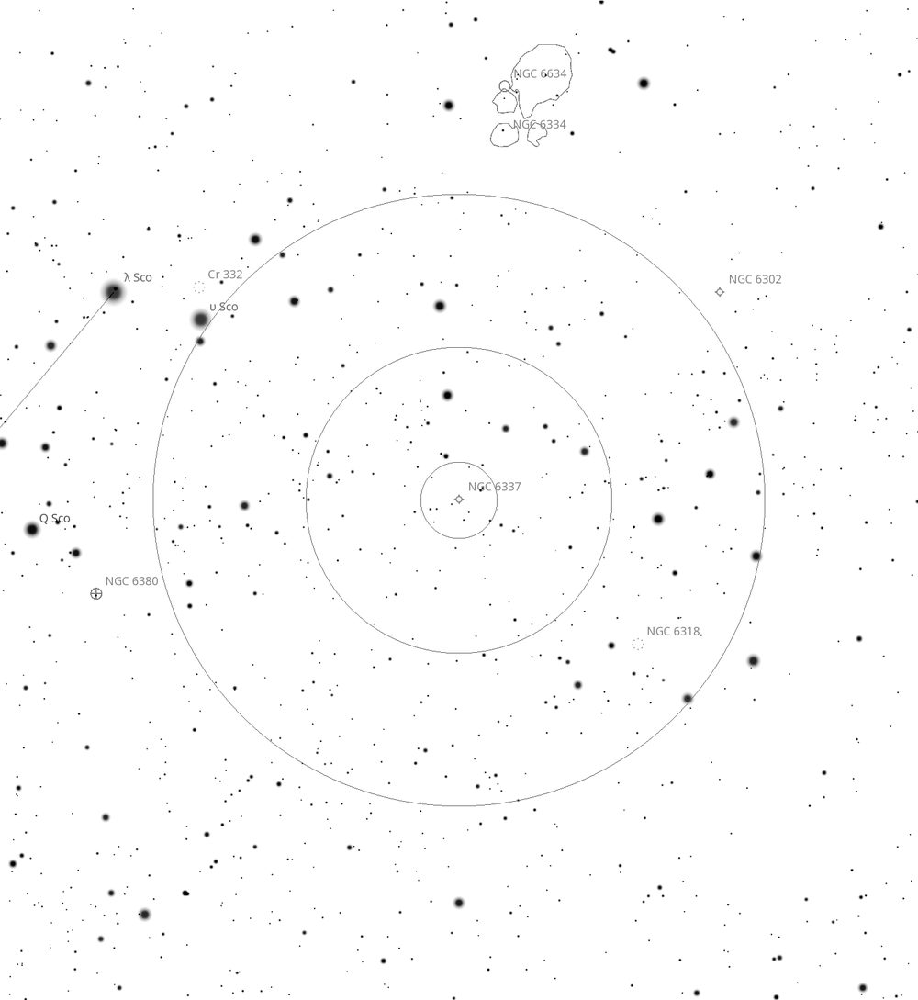
Moving into the tail of Scorpius, I located NGC 6337 a planetary nebula known as the “Cheerio” Nebula (or perhaps “Fruit Loop” Nebula is more fitting for Australian observers). With the 31mm Nagler in Lord Sidious and no filter I could pick out the 12.3 magnitude disk 51″ across. With the addition of the 17mm Nagler and an OIII filter you can easily see the ring shape that gives it its namesake. The dark centre creates the appearance of a thin ring, the perfect cosmic smoke ring. I could pick out a star sitting on the inside of the edge ring, likely a foreground star. Overall, a very cool planetary nebula, worth hunting down.
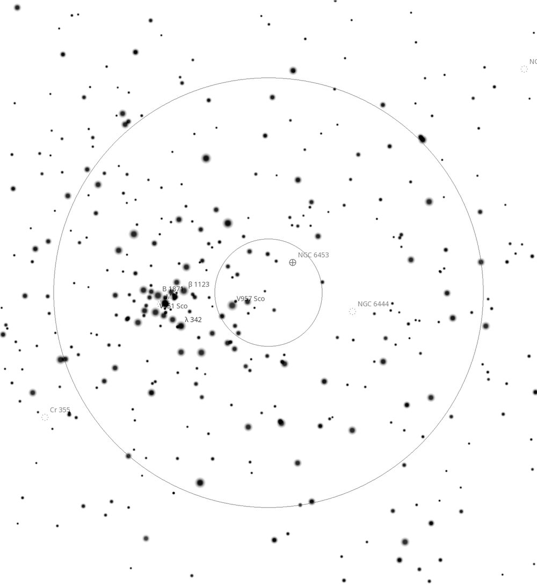
The last objects of note centred around the naked eye open cluster M7 (which is itself a lovely view in the 80mm refractor). NGC 6444 is an open cluster 12′ across and appears as a low surface brightness, loose collection of stars. To its left sits the globular NGC 6453, which appeared small and mostly unresolved. A few brighter members can be picked up giving it a grainy appearance. As Scorpius began sinking below the horizon, I decided to call it a night. Orion could be seen peaking above the trees to the east. Overall, it was a good night for seeing conditions, the dew seemed to pick up later in the night, and there was a slight breeze, but otherwise a pleasant night of observing.
Saturday morning, we awoke to another sunny day. Spring was in full swing across Wiruna with the wildflowers in flower and the native birds active (including the swallows darting in and out of the main shed). In the main shed Joe worked on the roof for the new observatory to permanently house Lord Sidious (should it be called the Death Star?). By the end of the weekend the roof frame was welded together. Saturday afternoon saw some cloud drift through, but the forecast was for a clear night, so I wheeled out Lord Sidious once again
Saturday night started off much the same, hunting around for targets whilst waiting for Scorpius and Sagittarius to come down from the Zenith. As members came and went various objects were recommended. One recommendation was the planetary nebula IC 5148, so we swung Lord Sidious over to the constellation of Grus. Also known as the “Spare Tyre” nebula, its thick ring shape is similar in shape to the previous night’s Cheerio planetary nebula (NGC 6337). At 2’ x 2’ and 11 magnitudes, it’s an easy target for the 22-inch. I did not get the chance to try an OIII filter as the scope was pointed at an awkward angle to reach into the tube to add a filter. A target worth revisiting next month.
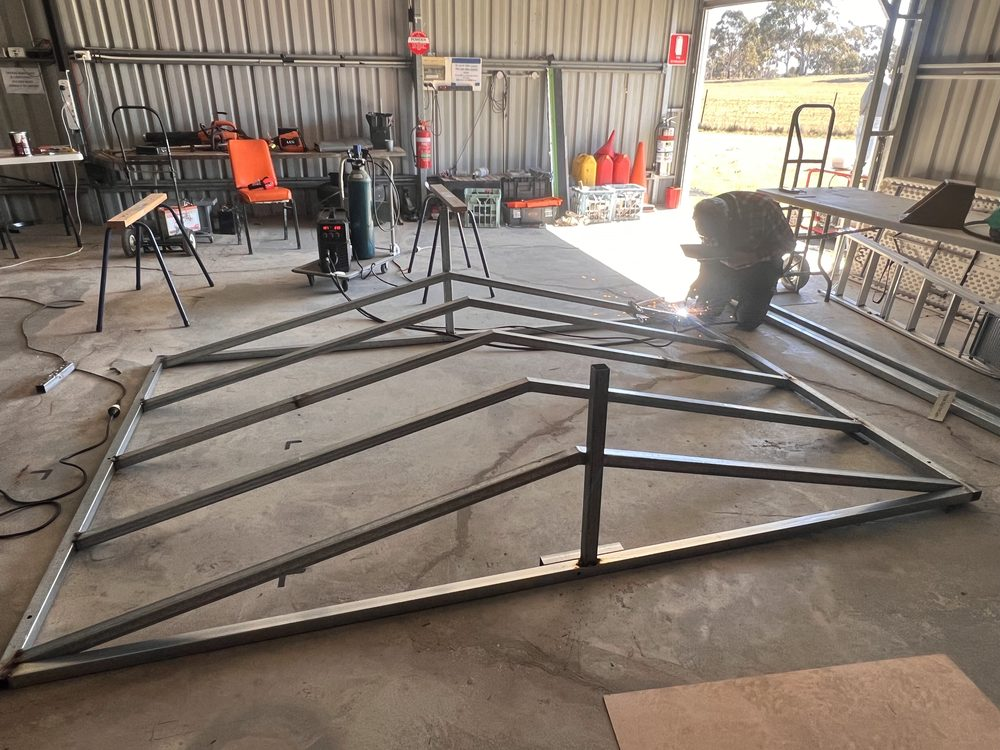
Getting back onto my Scorpius list, I started with NGC 6322 an open cluster. Three bright stars form a perfect triangle which framed the 10′ cluster. The cluster itself is 10-20 stars with no clear concentration, easy to pick out in 6.0 mag. Some colour in the members was visible.
Around 9.30pm I noticed Saturn had risen high enough in the east to give it a go in the 22-inch. With a 17mm Nagler the view was impressive. With the rings tilted again towards Earth we were met with a magnificent view of the rings. I also noticed the disk of Saturn itself appeared to have some bands of colouring (perhaps the shadow of the rings casting back onto the planet). I could see 3 moons, with a fourth flickering in and out of view. Even though it was not high in the sky, every now and again the atmosphere would settle for a moment to give a crisp view of the planet.
Back into Scorpius, M6/NGC 6405 is a large open cluster 14′ across, and bright at 4.2 magnitude. In Lord Sidious, the 31mm Nagler is needed to really capture the entirety of the cluster. The brightest member is a yellow star to the bottom left. No clear concentration, just a series of loops and chains with starless gaps in-between. This cluster is known as “The Butterfly Cluster” and it doesn’t take much imagination to see why. A chain of stars forms a “body”, with two wider loops of stars forming the “wings” either side of the body, and to top it off two short chains of stars protrude from the top of the “body” to form the butterfly’s “antennae”. The size and brightness made it an easy target in the 80mm refractor too which also showed the butterfly shape, although I don’t think the “antennae” were visible in the smaller scope.
NGC 6383 is a nearby open cluster centred on a bright 7th mag star which dominates the cluster. The body of the cluster is two brighter chains of stars roughly perpendicular to each other (resembling the constellation of Grus), with AV bringing out a few fainter members. Overall, it’s quite a compact cluster squeezed into an area 5′ across, but bright at 5.5 magnitude. With the 31mm Nagler in Lord Sidious the FOV was wide enough to spot another open cluster lurking at the edge, Tr 28. I panned the telescope over to have a closer look. It’s larger in size than its neighbour, but more diffuse and lacks any bright members. Largely distributed uniformly across a circular shape. AV also teases out additional fainter members of the cluster.
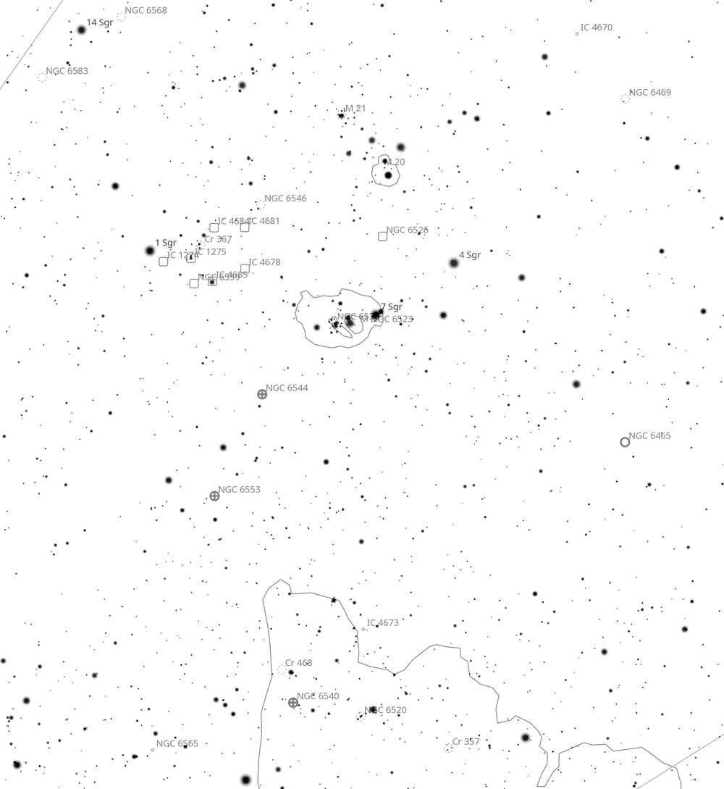
Next, I decided to wander over into Sagittarius. Instead of Lord Sidious, I started by putting in the 35mm Panoptic into the refractor giving me a ~4.3° FOV. Whilst nothing beats aperture for revealing structure and detail, I had a lot of fun just panning around this area with the 3-inch refractor and a star chart, as the area is rich in objects (see Figure 9). I started by centring the 3-inch refractor on the Lagoon Nebula M8, which is a large bright patch of nebulosity and the brighter members of NGC 6530 (the cluster within the nebula) being resolved. Even with the 3-inch refractor I could begin to tease out some of the darker rifts and details in the Lagoon itself. To bottom-left of the FOV sat M20, the Trifid Nebula. It was a little more challenging for the refractor, with it appearing as two distinct halos of nebulosity around brighter points. With AV these two halos join into one continuous patch. The dark lanes were not visible, but I suspect a higher power eyepiece plus filter would have rewarded me with more details. The open cluster M21 sits off to the right is resolved into a tight ball of stars. Panning the refractor back towards M8, I spied out the hazy disk of the globular cluster NGC 6544 sitting ~1° away. Although unresolved, I could separate out the bright core from surrounding soft glow of the halo. A further ~1° I could spy another soft glow of a globular, NGC 6553, although fainter. This then led me to a rich star-field region, within which I could pick out NGC 6520. This cluster (mentioned in the Universe June 2026 edition) is distinctive as it lays next a dark patch of dust (known as the Ink Spot B 86) and a bright orange star, all of which I could pick out in the little refractor. I could also spot NGC 6469 sitting to the left of M20 as a large, diffuse, cloud of stars not fully resolved. This really is a fun area to explore manually with a wide-field telescope. I hopped back over to Lord Sidious to continue into Sagittarius to explore NGC 6469 further. This 12′ open cluster is formed by a “V” shape of brighter stars, with the majority of members being contained within this V. The stars displayed a range of brightnesses, with AV filling out the cluster
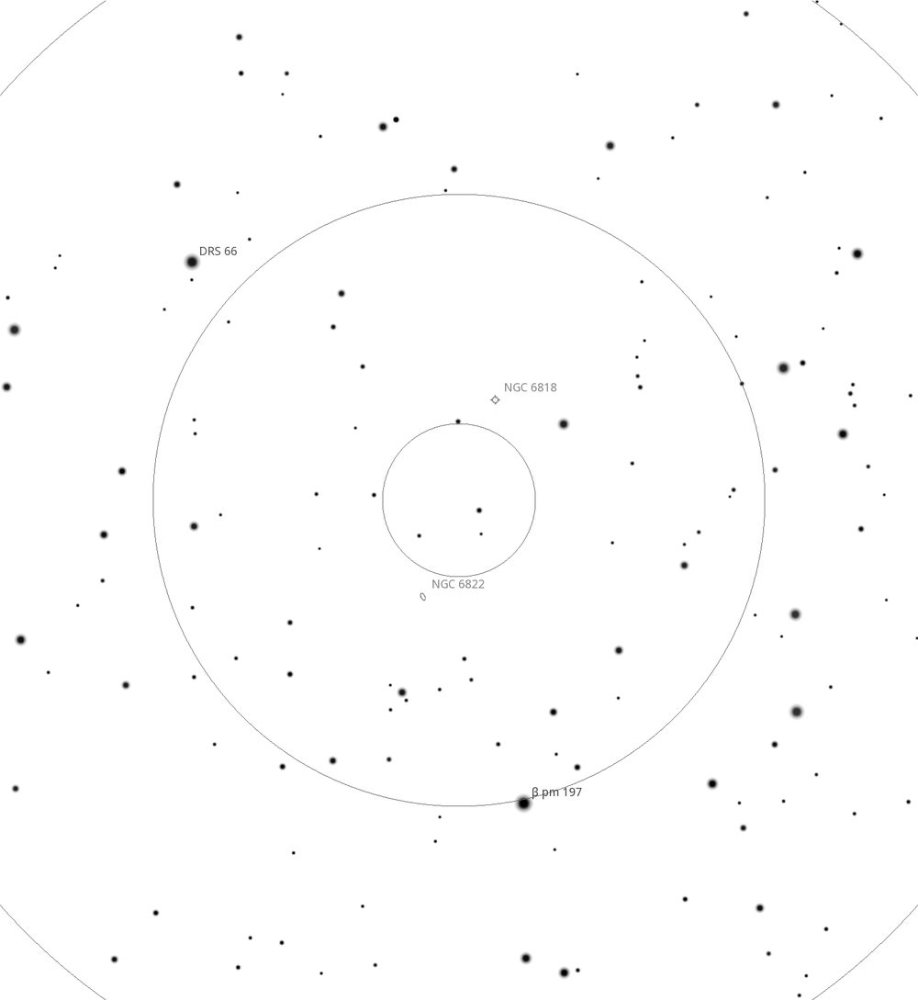
Next on the list was NGC 6822, an irregular barred dwarf galaxy 1.6-million light years away and a member of the local group (see Figure 10). The striking thing about the galaxy is its size, 15′ x 9.4′ across. Although it has a listed visual magnitude of 8.1, the light is spread out over a large area, resulting in a low surface brightness of ~15 magnitude. I started with a 31mm Nagler, and could pick up a faint diffuse glow, roughly elongated shape like a mini-LMC in the eyepiece. The two knots of HII star-forming regions were visible as stellar points to me. Higher magnification eyepieces were unhelpful, upping the magnification with a 27mm or 17mm made it more difficult to spot. Only 40′ away lies the planetary nebula NGC 6818 (see Figure 10). The disk 20″ across is clearly non-stellar and is particularly bright at 9.3 magnitude. It has a slight blue-grey tinge to it. Increasing the magnification with a 9mm Nagler gives a much better view of the disk. Closer up the disk seems slightly more squashed, with a slight darker centre to the disk. It responds well to a UHC and OIII filter. With a wider FOV eyepiece, you can squeeze in a dwarf galaxy and a planetary nebula in the same FOV.
Towards the end of the night, I went back to the 3-inch refractor with a 35mm Panoptic eyepiece and was able to fit the majority of the LMC in the same FOV. Starting from NGC 2070 at the bottom you can spot a number of knots of star-forming regions and clusters. Off to the right was some associated regions disconnected from the main galaxy. One thing I noticed is the way the LMC appears to tail off up and to the right. It is not quite the elongated oval it appears to the naked eye, a consequence of gravitational tidal forces 2. Exploring the LMC and SMC in detail is a project for another weekend.
All up the seeing conditions remained good all night. There was little wind and it was slightly warmer than Friday night. The 3-inch refractor was a great complement to Lord Sidious. It was fun to hop around with the refractor’s wide FOV, then swing Lord Sidious over for a deeper look. Until next month. Clear skies.
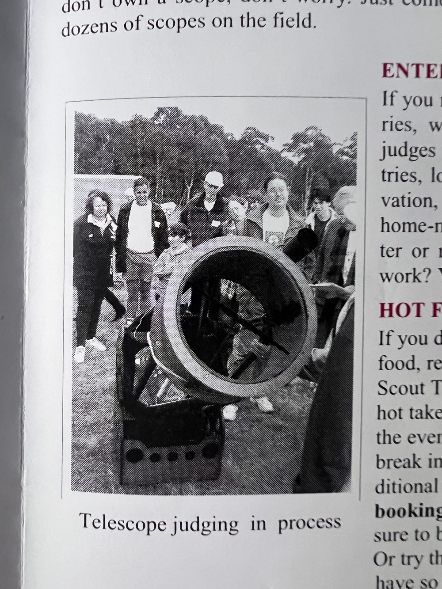
Authors note: I would like to thank the Committee for my nomination for the Mike Kerr award. The society has a long tradition of dedicated visual observers. I owe a debt of gratitude to all those who took the time to introduce a young kid to the stars (Fig 11). I still contend that I get more out of society, than the society gets out of me, so thank you.
Table of Targets
| Name | Type | Constellation | RA (J2000) | DEC (J2000) | Mag | Size |
|---|---|---|---|---|---|---|
| NGC 5617 | Open Cluster | Centaurus | 14h 29m 42s | -60° 42′ 50″ | 6.3 | 15′ |
| M80 (NGC 6093) | Globular Cluster | Scorpius | 16h 17m 02s | -22° 58′ 33″ | 7.3 | 10′ |
| M4 (NGC 6121) | Globular Cluster | Scorpius | 16h 23m 35s | -26° 31′ 33″ | 5.4 | 26′ |
| NGC 6139 | Globular Cluster | Scorpius | 16h 27m 39s | -38° 51′ 02″ | 9.7 | 1.6′ |
| NGC 6072 | Planetary Nebula | Scorpius | 16h 12m 57s | -36° 13′ 50″ | 11.7 | 1.2′ |
| NGC 6124 | Open Cluster | Scorpius | 16h 25m 19s | -40° 39′ 16″ | 5.8 | 29′ |
| NGC 6259 | Open Cluster | Scorpius | 17h 00m 45s | -44° 39′ 25″ | 8.0 | 15′ |
| NGC 6249 | Open Cluster | Scorpius | 16h 57m 36s | -44° 49′ 19″ | 8.2 | 6.0′ |
| IC 4628 | Emission Nebula | Scorpius | 16h 56m 54s | -40° 30′ 50″ | - | 34′ |
| NGC 6268 | Open Cluster | Scorpius | 17h 02m 07s | -39° 43′ 00″ | 9.5 | 6.0′ |
| NGC 6242 | Open Cluster | Scorpius | 16h 55m 36s | -39° 28′ 17″ | 6.4 | 10′ |
| NGC 6337 | Planetary Nebula | Scorpius | 17h 22m 16s | -38° 29′ 09″ | 12.3 | 0.8′ |
| M7 (NGC 6475) | Open Cluster | Scorpius | 17h 53m 51s | -34° 47′ 39″ | 3.3 | 1.3° |
| NGC 6444 | Open Cluster | Scorpius | 17h 49m 30s | -34° 49′ 34″ | - | 12′ |
| NGC 6453 | Globular Cluster | Scorpius | 17h 50m 52s | -34° 35′ 59″ | - | 3.0′ |
| IC 5148 | Planetary Nebula | Grus | 21h 59m 37s | -39° 23′ 07″ | 11.0 | 2.0′ |
| NGC 6322 | Open Cluster | Scorpius | 17h 18m 25s | -42° 56′ 06″ | 6.0 | 10′ |
| M6 (NGC 6405) | Open Cluster | Scorpius | 17h 40m 20s | -32° 15′ 14″ | 4.2 | 25′ |
| NGC 6383 | Open Cluster | Scorpius | 17h 34m 42s | -32° 34′ 57″ | 5.5 | 2.5′ |
| NGC 6469 | Open Cluster | Sagittarius | 17h 53m 12s | -22° 19′ 12″ | 8.2 | 12′ |
| NGC 6822 | Galaxy | Sagittarius | 19h 44m 57s | -14° 47′ 48″ | 8.1 | 15′ |
| NGC 6818 | Planetary Nebula | Sagittarius | 19h 43m 59s | -14° 09′ 10″ | 9.3 | 0.7′ |